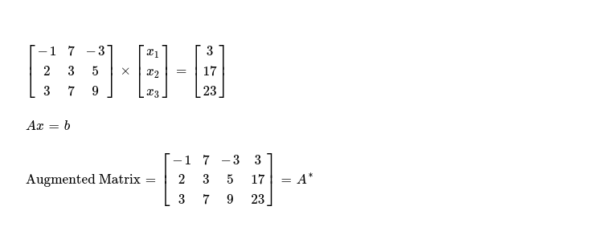
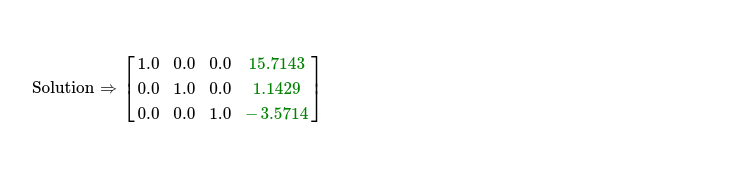
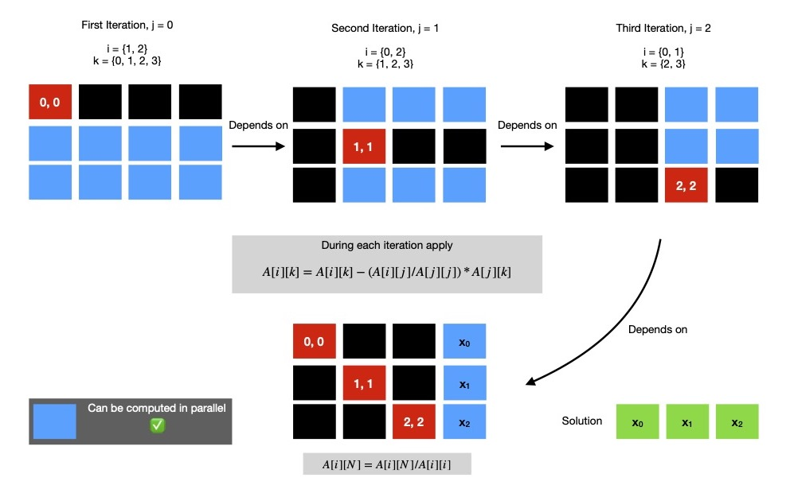

This week I spent sometime writing an implementation in SYCL DPC++ for solving a system of linear equations, using Gauss Jordan Method. It is pretty well known sequential algorithm for solving this problem, but with little tweaking it can be parallelized. I plan to target GPGPU sitting on my computer for finding large number of unknowns ( read N >= 1 << 10 ), so I decide to implement it in SYCL DPC++, which gives me a nice parallel programming framework, targeting heterogeneous platforms. I'll first take an example to demonstrate how this method works & later I'll talk about how I implement it in SIMD model.
Let me start with following set of linear equations.
I'll work on 👇 augmented matrix of dimension N x (N+1), here N = 3.
In first iteration, I'll modify only elements present in rows other than row0, using following formula, as I'm interested in eliminating all elements below pivot ( read cell A*j,j ).
In next iteration, my interest is to eliminate elements below & above pivot A*j,j where j = 1. I run following code snippet to do so.
I've eliminated all elements below & above pivot A*j,j where j = {0, 1}, remaining is row2, where I've to zero out all elements above pivot A*2,2.
Gauss Jordan method requires me to convert N x N submatrix of augmented matrix A*N x (N+1) to identity matrix IN x N. I've already eliminated all elements below & above pivot elements A*j, j where j ∈ {0, 1, 2}. For obtaining identity matrix, I divide each cell across all rows by pivot element of that row. After this I should get solution to system of linear equations along columnN of augmented matrix. As I'm just interested in solution, I use following code snippet.
Solution to system of linear equations using sequential Gauss Jordan method is easy to find. I notice there's potential for making this method parallel, though I also note there needs to be 3 iterations i.e. 3 kernel invocations, which are data dependent on previous one --- effectively reducing scope of parallelism. But inside each of these N iteration of eliminations, no data dependency exists & that's what I aim to parallelize.
If I put all three elimination steps along with final identity matrix conversion step, in single diagram it'll be easier to visualise.

If I've N unknowns to find, I've to run N elimination steps ( eliminate elements below & above pivot cell in currently active row ),
each of them can perform all encapsulated computations in parallel. But each elimination step is dependent on previous one, so they can't be
independently scheduled for execution, rather I can use in-order execution queue when submitting task to accelerator device.
It's fine to use out-of-order execution queues because task graph will automatically figure out dependency chain from
usage pattern of buffer objects.
During elimination step j, a submatrix of dimension (N - 1) x (N + 1 - j) is operated on. So it's easy to understand
as we progress forward, size of computable submatrix reduces. In above diagram, I mark this submatrix of computation in blue.
All cells of certain submatrix can be computed in parallel.
Keeping this in mind I write one data parallel implementation in DPC++ for solving system of linear equations.
For ease of assertion, I first generate two random matrices. From them I compute, Ax = b.
Now I construct an augmented matrix from AN x N & bN x 1, which I solve using aforementioned algorithm, in parallel. Finally I compare computed solution with expected one to check for deviation, which is inevitable as I see dpcpp compiler enables quite a lot of optimization, which is reflected on results of floating point operations. I ran same implementation on 3 different platforms, with N = 1024, obtaining following performance. In all these runs, I used local workgroup size of 32, which is generally good fit when targeting GPGPUs.
I keep DPC++ implementation here for future reference.
In coming days, I'll implement iterative methods for solving system of linear equations like Jacobi method or Gauss Seidel method, using data parallel model that SYCL provides.
Have a great time !